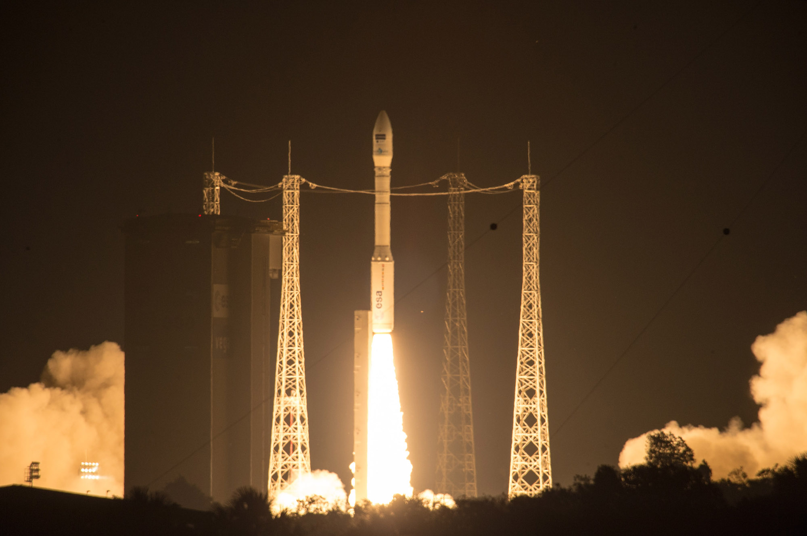

Vega
Vega is a european space agency (ESA) rocket which was first flown in 2012 and consists of 3 solid-fueled rocket stages and an optional 4th liquid fueled stage.At just under 30 meters tall and roughly 3 meters wide with a payload capacity of roughly 1,500kg the vega if a fairly small rocket, the reason for having such a small rocket is that the ESA have both medium and heavy rockets (in the form of soyuz and ariane 5 respectivly) and wanted a way to lift there small science probes without having to waste over 18,000kg of capacity on an ariane 5 to launch small probes like lisa pathfinder.
Since it was introduced in 2012 vega has successfuly completed all 6 missions it has performed and it currently has 3 missions planned in 2016 with a further 4 in 2017, most of these mission are scientific in nature and include earth observation satellites and tehcnology demonstrators in the form of lisa pathfinder (click here for more) and the IXV re-entry vehicle, along with weather and nano satellites.

Launch of a Vega rocket.
back to top